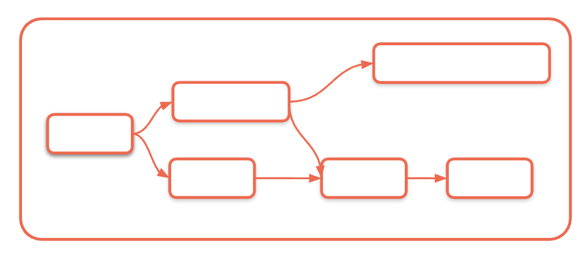

Section 4 · Working with Lakeflow Jobs · Quelle: Kurs 2, Kapitel 6–7
Ein Job, der nur manuell gestartet wird, ist für den Produktivbetrieb wenig hilfreich. Damit Datenpipelines zuverlässig und ohne menschliches Zutun laufen, bietet Lakeflow Jobs ein reichhaltiges Set an Trigger-Typen sowie Mechanismen, um Tasks zur Laufzeit mit Parametern zu versorgen. Dieses Dokument behandelt beides: die Automatisierung der Ausführung und die Konfiguration wiederverwendbarer, flexibler Tasks.
Lakeflow Jobs unterscheidet zwischen mehreren Ebenen der Parametrisierung:
{{ }}-Syntax) – erlauben den Zugriff auf Laufzeitkontext wie {{job.run_id}}, {{task.name}} oder auf Ergebnisse anderer Tasks wie {{tasks.data-validation.values.record_count}}.In einem Notebook-Task lassen sich Parameter über dbutils.widgets.get(...) abrufen, während Task Values explizit gesetzt und gelesen werden:
# Einen Task-Parameter im Notebook auslesen
my_catalog = dbutils.widgets.get("catalog")
my_schema = dbutils.widgets.get("schema")
# Einen berechneten Wert fuer nachgelagerte Tasks bereitstellen
duplicate_exists = df.count() > df.dropDuplicates().count()
dbutils.jobs.taskValues.set(key="has_duplicates", value=duplicate_exists)
# Diesen Wert in einem anderen (downstream) Task auslesen
upstream_flag = dbutils.jobs.taskValues.get(
taskKey="customers_sales_summary",
key="has_duplicates"
)
Ein Trigger ist im Kern eine Regel, die automatisch einen Job-Lauf auslöst. Lakeflow Jobs unterstützt vier Kategorien:
| Trigger | Funktionsweise | Typischer Einsatzzweck |
|---|---|---|
| Scheduled (Zeitgesteuert) | Einfache UI-Schedules (stündlich/täglich/wöchentlich) oder volle Cron-Syntax für komplexe Zeitpläne | Tägliche ETL-Läufe, wöchentliche Reports, monatliche Aggregationen |
| File Arrival | Überwacht einen Cloud-Speicherort bzw. ein Unity-Catalog-Volume auf neue Dateien | Partnerdaten-Feeds, unregelmäßig eintreffende Dateien |
| Table Update | Löst aus, wenn sich eine oder mehrere überwachte Quelltabellen ändern (bis zu 10 Tabellen, „any“ oder „all“) | Ereignisgesteuerte Weiterverarbeitung ohne festen Zeitplan |
| Continuous | Startet automatisch einen neuen Lauf, sobald der vorherige beendet ist | Dauerhaft laufende Streaming-Workloads |
Bei der Table-Update-Trigger-Konfiguration lassen sich zusätzlich zwei Feinsteuerungen setzen: Minimum time between triggers verhindert zu häufiges Auslösen bei schnell aufeinanderfolgenden Tabellenänderungen, und Wait after last change verzögert den Start, bis seit der letzten Änderung eine bestimmte Zeit vergangen ist – nützlich, wenn Daten in mehreren Batches eintreffen und erst nach vollständigem Eintreffen verarbeitet werden sollen.
Ein File-Arrival-Trigger wird auf ein Unity-Catalog-Volume oder einen Cloud-Speicherpfad gerichtet. Sobald eine neue Datei erscheint, startet der Job automatisch – standardmäßig prüft Databricks etwa einmal pro Minute auf Änderungen. Wichtig: Nur wirklich neue Dateien lösen einen Lauf aus; das Überschreiben einer Datei mit demselben Namen tut dies nicht. Zudem gilt eine Obergrenze von 1000 Dateien pro Trigger-Auslösung.
-- Volume anlegen, das als Ueberwachungsort fuer den File-Arrival-Trigger dient CREATE VOLUME IF NOT EXISTS trigger_storage_location; -- Verfuegbare Volumes im aktuellen Schema anzeigen SHOW VOLUMES;

Sowohl auf Job- als auch auf Task-Ebene lassen sich Benachrichtigungen konfigurieren – per E-Mail, Microsoft Teams, PagerDuty, Slack oder Webhook. Job-Level-Benachrichtigungen eignen sich für Stakeholder, die nur am Gesamtergebnis interessiert sind; Task-Level-Benachrichtigungen erlauben granularere Alarmierung, etwa sofortige Meldungen bei fehlgeschlagenen Datenqualitätsprüfungen. Neben Erfolg/Fehlschlag lassen sich auch Schwellenwerte für Late Jobs (Laufzeitüberschreitung) oder Streaming Backlog konfigurieren.
Eine durchdachte Retry-Policy berücksichtigt die Art des Fehlers (z. B. transiente Netzwerkprobleme vs. Datenqualitätsprobleme), die Auswirkung wiederholter Ausführung auf Cluster-Ressourcen sowie geschäftliche SLA-Vorgaben, die das Zeitfenster für Wiederholungen begrenzen können.